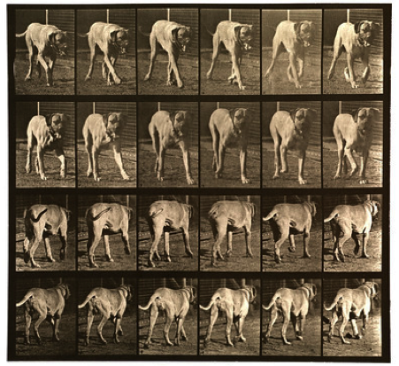
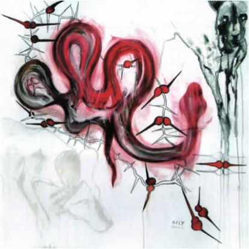
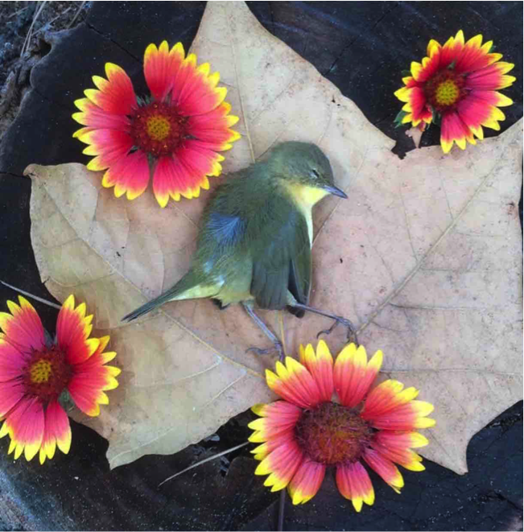

Animal Representations in Visual Culture: An Overview and a Haunting
Hayley Zertuche
hzertuc [at] g [dot] clemson [dot] edu
Clemson University, College of Architecture, Arts, and Humanities
Abstract
The present article reaches for this material porosity by first considering representations of animals in visual/digital culture and the presumed ontological limits of “Human” and “Animal” therein. Representation is not the only way of constructing and communicating knowledge, so this article asks how, then, might we look at animals differently? How might the impossibility of a clear distinction between humans and animals haunt our screens and frames? I argue that these are the questions we must ask for more ethical visual engagements with animals. What this article reaches for, then, is a type of looking with (rather than at) animals that questions the very terms “Human” and “Animal” so often taken as self-evident in Western philosophy and rhetoric. I suggest that this type of looking is a “humanimal” vision that, in the midst of a blinding digital deluge of images, feels for our mutual material entanglements with animals such that a more ethical stance may develop through everyday practices.
In the accompanying ideology, animals are always the observed. The fact that they can observe us has lost all significance.
—John Berger About Looking 16
A black and white photograph of Meadow lays flat on my office desk. It bears the marks of a life much looked upon: framed, hung from little metal teeth, tucked secretly away in shoulder bags and backpacks, and packed and moved across the country. But otherwise obscured and receding behind the lived materiality of this photographic medium, Meadow’s eyes still pierce me in a way that is difficult to talk about. What I see there is a shared, entangled life and the trauma of a death that was always a certainty and that made any affection toward her a risk of future mourning. This photograph, however flat and worn, is a haunting of Meadow: my dog.
My photograph of Meadow offers an important contrast to how animals like her are typically encountered in images. Animals are often funny, cute, entertaining—the type of “soft news” Claire Molloy describes in Popular Media and Animals as “designed to have emotional appeal, to arouse our sympathies, curiosity or fascination” and, ultimately, to sell by way of their trivial, sentimental nature (2). These popular animal images are significant since depictions of animals in visual media have a crucial influence on cultural perspectives and actions. What, for example, are we to make of the widespread fascination with cat memes? Why do images of animals balancing different objects on their bodies go viral? And do these strange digital phenomena have anything to do with the practices of human exceptionalism that find us in a plastic-laden era now ominously referred to as the “Anthropocene” in which massive devastation to all that is “nonhuman” may even be propelling us toward a sixth massive global extinction? 1 Looking at animals may have begun in earnest with the zoos of colonialism, but it has reached an apex in our digital era that is as strange as it is unquestioned. The visibility of these digital animals (and the simultaneous invisibility of others) recalls John Berger’s contemplations from nearly four decades ago: what does it mean to look at animals today? And perhaps more importantly, what does it mean that we no longer offer animals the opportunity to look back?
In Ecosee: Image, Rhetoric, Nature, editors Sidney I. Dobrin and Sean Morey consider anew the “dilemma of representation” in creating and looking at animal and environmental images (3). As Dobrin and Morey point out, previous rhetoricians engaging with environmental discourses have overlooked the importance of images in shaping meaning, but images now constitute so much of that discourse that they are in need of critical attention. In “A Rhetorical Look at Ecosee,” Morey explains how “our culture is moving increasingly toward a rhetoric of images, where most communicative acts occur through visual media” (41). Indeed, digital media now allow for “viral” communication—a metaphor that implies a pandemic infection of our biological beings. And the types of images “going viral” are symptomatic of the systemic perceptions in our local and global societies. Irmgard Emmelhainz refers to this virility as a “circulation of visibilities” that are making it more difficult to see the pervasive ecological detriment that characterizes our current Anthropocene era (Emmelhainz). Understanding these viral infections as constructed within a representational framework may help aid the development of an alternative pharmakon—one that illuminates its own material processes at work within us and makes us aware of our breached, porous bodily frontiers.
The present article reaches for this material porosity by first considering representations of animals in visual/digital culture and the presumed ontological limits of “Human” and “Animal” therein. Representation is not the only way of constructing and communicating knowledge, as we will see with Karen Barad’s philosophy-physics. How, then, might we look at animals differently? How might the impossibility of a clear distinction between humans and animals haunt our screens and frames? I argue that these are the questions we must ask for more ethical visual engagements with animals. What this article reaches for, then, is a type of looking with (rather than at) animals that questions the very terms “Human” and “Animal” so often taken as self-evident in Western philosophy and rhetoric.2 This type of looking, I will argue, is a “humanimal”3 vision that, in the midst of a blinding digital deluge of images, feels for our mutual material entanglements with animals such that a more ethical stance may develop through everyday practices.
Abyssal Looking
We do not speak of the air between our body and nearby tree, but rather speak of the empty space between us. It is empty. Just an absence of stuff, without feeling or meaning. A void.
—David Abram, “The Commonwealth of Breath” (302)
What fantasy of distance is this?
—Karen Barad, Meeting the Universe Halfway (396)
Representation (and its use of reflection as a metaphor) is a problematic framework in which to create and encounter images, because it presumes a distinct distance between an image and its observer—between animals and their human onlookers. In other words, this problematic way in which we construct and encounter images is inherited from a flawed view of reality.4 Enter the unlikely help of quantum physics. In Meeting the Universe Halfway: Quantum Physics and the Entanglement of Matter and Meaning, Karen Barad describes her agential realist account of quantum mechanics and its ontological, epistemological, and ethical implications. This “agential realism,” then, is one in which meaning and reality are created through our mutual material entanglements and practices. One of the things that becomes remarkably and beautifully apparent about “the nature of nature” in this philosophy-physics is that there is no ontological (nor epistemological, nor ethical) abyss between discrete things or beings (29). Indeed, there are no “things,” as the smallest unit enacted in any agential cut is the entangled phenomenon itself (56). Whatever perception of an abyss may exist within a representational framework, it is just that: a flawed perception using an inadequate optical metaphor for understanding phenomena. In fact, there can be no discrete, determinate characteristics that separate subject and object in advance. Or, perhaps more accurately accounting for the difference enacted and attended to within diffractive patterns of phenomena, any perceived abyss is never settled but rather moves with every agential cut created.
The dynamic and fluid nature of these distinctions described by Barad is strikingly similar to Derrida’s discussion of the apparent abyss between singular categories “Human” and “Animal” in The Animal that Therefore I Am. While Derrida’s stance is that the question of whether an “abyss” exists between the so-called Human and Animal is not debatable, he troubles this discussion significantly by arguing that humans and animals exist instead as “relations… at once intertwined and abyssal, and they can never be totally objectified” (31, emphasis added). Any line plunging into an unseen, untraceable abyss between categories is, in fact, no line at all. Rather it is an unknowable, enfolding ontological relation. And, according to Barad, it is a relation that changes with every measurement or apparatus that makes a cut—in this case, every photograph, every video, every performance of the animal. These visual cuts attempt to sever the messiness of the world and, in the case of representation, reinforce the humanist stance as center, objective, outside. But by looking at animals, whether in film, sculpture, Internet memes, photography, drawings, etc., we are constructing specific entangled realities with those animals. Barad explains that these are material-discursive practices that create agential cuts in the world, carving out the phenomena in which we, the observers, are an entangled part:
. . . a different material-discursive apparatus of bodily production materializes a different configuration of the world, not merely a different description of a fixed and independent reality. We are responsible for the world of which we are a part, not because it is an arbitrary construction of our choosing but because reality is sedimented out of particular practices that we have a role in shaping and through which we are shaped. (390, emphasis added)
Description of the world is not just the concern here; it is the actual configuration of the world created by our practices that we seek to address.
Despite increasing scientific evidence to trouble the human/animal distinction, the ontoepistemological abyss between these two categories continues to simultaneously be symptomatic of and justification for everyday animal exploitations. And this abyss is particularly striking in visual culture. These images—with their grasping, objectifying ways of looking—create very real consequences for humanimal-animal entanglements and, as such, are crucial to examine.5
In An Introduction to Animals and Visual Culture, Randy Malamud offers an overview and criticism of animal representations across a wide range of media. For Malamud, the act of framing animals within cultural screens is a crime we are guilty of since the beginning of human culture, and it is now only increasing in rapacity with the proliferation of digital media. Malamud argues that the crime of representation colonizes the ecological space of animals and displaces real animals from their natural habitats (36). Perhaps the best place to recognize this colonization as well as the abyssal nature of animal representation is where the natural fluidity and movement of life processes and boundaries are cut into discrete, discernable parts. Eadweard Muybridge’s Animal Locomotion series is precisely this place (see figure 1).

Figure 1. Eadweard Muybridge’s “Animal Locomotion Plate 503.” Eadweard Muybridge Online Archive; Web.
As Malamud explains, Muybridge’s revolutionary stop-motion photography in the late 1800s is the germ from which film began. With his “zoopraxiscope,” Muybridge captures moving animal bodies in discrete frames, including the (very gendered) human form.6 “The Horse in Motion” was especially popular for its ability to break down the movement of a horse’s gallop that could not otherwise be discerned with the naked eye (see figure 2). Muybridge performed hundreds of animal motion studies like this, comprising eleven volumes published by the University of Pennsylvania from 1872-1885 (Muybridge Animal). Each animal is framed “against a backdrop of numbered scales and grids, the more convenient to chart and graph them” (Malamud 66). Animals visually dissected in this way:
Figure 2. Eadweard Muybridge’s “A Horse in Motion.” Animal Locomotion Volume 9. Philadelphia: University of Pennsylvania, 1887; Web.
are comprised not of flesh and blood and hair, but of silver albumen and paper. There are so many of them. . . that after a while, we cannot really see them at all. We certainly cannot hear them or smell them, or feel (as we do in proximity to a real horse) awesomely dwarfed by them. Broken down by Muybridge and his apparati, they do nothing but run and run. Their force and motion no longer seem their own, but Muybridge’s, and ours. . . the horses themselves lose something in this transaction. (Malamud 66)
In this description of Muybridge’s photos, Malamud shows how stark a line is drawn between the human observer and the animal object. The complex enfoldings and becomings of human and animal beings suggested by the materialism of Barad’s philosophy-physics are cleanly severed by the precise dissection of animal movements. This grid-like organization is the very figure of Modernism, as Mark C. Taylor explains in The Moment of Complexity. During this time, the clean formalism of the grid echoes a common assumption: “people are distinguished from animals by their ability to follow a straight-and-narrow line” (26). It is not surprising that the grid becomes a way of mapping and segmenting the messy biological movements of animal bodies in order to more fully grasp them. Indeed, as Berger notes, “[animals] are the objects of our ever-extending knowledge. What we know about them is an index of our power, and thus an index of what separates us from them. The more we know, the further away they are” (16).
Malamud seems to also echo Emmelhainz in his concern over the sheer number of images in Muybridge’s form studies: “There are so many of them. . . that after a while, we cannot really see them at all.” We can no longer see the embodied animals and their fluid movements. Yet Malamud’s critique offers no satisfying answer to this inherently violent representational framework, because he still seeks the return of each animal to its natural habitat, which is out “there” somewhere, divorced from our own looking beings. The inability for Malamud to get out of this representational framework is understandable; at the foundation of his critique is a system of familiar binaries: human/animal, nature/culture, subject/object, representation/real. This becomes particularly interesting once domestic animals enter the scene, given that they significantly trouble these binaries. Cats and dogs for example, so often featured as the actors in viral images and memes, have no natural habitat to which they might return.
One of the most common cat memes dating back to 2003 is popularly known as “Happycat,” a blue-grey British Shorthair originally pictured with the text “I can has cheezburger?” (Menning). It is difficult to imagine how this silly image and others like it could be harmful on any level, yet—under further scrutiny—the amusement that prompts such a seemingly innocuous meme is symptomatic of a more insidious stance toward animals, even in the domestic sphere. A pet rabbit named Oolong provides another example. Around the same time that “Happycat” was infecting our digital screens, images of “Pancake Bunny” began circulating as well. This meme features Oolong balancing random objects on his head, including “tea cups, an apple, an orange, a carrot, a piece of dried seaweed, a sesame bun, a book, a compact disc, a tea kettle, a lit candle, a camera lens, a sprig of an evergreen, even a rabbit skull” (Malamud 34). Oolong’s owner posted hundreds of these images on a daily blog, the most famous of which earned Oolong his nickname “Pancake Bunny.” Since images of Oolong’s “head performance” went viral, similar memes of pets balancing objects have also become popular, including “cat sandwiches” and a blog called “Food on My Dog” that, predictably, features a dog balancing various food items on her head (“Food”). One image of “Food on My Dog” features the Staffordshire Terrier, named Tiger by her owner, sitting patiently with cooked spaghetti covering half of her face (see figure 3). In the image’s caption, her owner reassures The Telegraph viewers, “I wouldn’t do it without giving her a reward.” This Tumblr blog has become popular enough that Tiger’s owner “is now getting requests on what Tiger should balance next” (“Food”).

Figure 3. Photograph of “Cold Spaghetti” from Andrew J. Small’s Food on My Dog blog; Web.
We cannot return domestic animals to a natural habitat, because this is their natural habitat: in our homes, in our lives, amongst our strange everyday objects. What, then, do these animal images mean about our perceptions and attitudes toward pets? What does it mean that we find these images “cute” or amusing? How does that translate into our perceptions of pets and animals more generally? Images of domestic animals are foregrounded with an inherent ontological entanglement in human lives. One would think it would be easier to see this entanglement, but the treatment of domestic animals as amusing or cute props can seem especially objectifying. Images of pets balancing, draped with, or adorned with objects are rampant on social media sites like Instagram. For example, during one holiday season, a black and white photo of a dog wrapped in brightly lit Christmas lights appeared in my Instagram feed. The animal can still be found posing, forever frozen in this image, with a tilted head as if in response to a vocal cue. The only caption accompanying the photo is a string of 24 hashtags to maximize visibility, including #dogsofinstagram, #healthypet, and #pets_perfection (Culp). This photo is couched within a typical amateur Instagram account, amongst photos of family and everyday happenings (in other words, it is not an account devoted to a pet covered in objects). There is no overt indication that the pet owner feels anything but adoration for this dog, who is featured regularly in her everyday dog-ness: on a leash in the park, cuddling in bed, watching a grasshopper. The context in which this one unsettling image is found further highlights the complexity of pet-owner entanglements. What are we doing wrapping pets in lights—an arguably dangerous activity—and posting pictures of this on social media?
If we assume the most critical stance regarding these animal-object images, the pets within are rendered silent, marginal, and—as Malamud argues—subaltern (40). Animals are physically surmounted by a pancake, limp spaghetti, Christmas lights . . . the object itself matters little. What does matter is the ellipsis following a seemingly endless list of objects that can be made to surmount an animal. Animals multiply in these memes as part of the décor of our everyday lives, and yet they are rendered amusing by the tacit acknowledgment that they have no more being than the mute objects we make them carry. According to Malamud, this framed animal is “a prop, the sideshow star who is completely unaware of how funny he [sic] is, and that makes it even funnier. He is at the same time the center of visual attention, and wholly absent” (39).
“Cute” and funny animals, even in the domestic space, find themselves ripe for commodification—the ultimate abyssal cut between two categories. Most of the memes I have mentioned so far offer merchandise for sale; links on websites scream: “Visit the nyan cat store!”; “Foodonmydog Shirts!” Becoming commodities is dangerous for animals, which manifested most explicitly with the zoos of colonialism. Some of us may find it surprising that the first stuffed animals for children, which were inspired by exotic zoo animals newly available to the 19th-century human gaze, were covered with “the skin of still-born calves” (Berger 23). If any practice makes clear the certainty that looking at cute animals has nothing to do with real animal lives, it is this: stripping newly born animals—cute when animated with life—of their intimate materiality, their skin, in order for this materiality to package children’s toys. With the proliferation of screens on which we can display more and more cute animal packages seeking attention, the danger of cute is just as real today.
In an article titled “The Cruel Cost of Cute,” zoologist Rob Sullivan explains how common it is for photographers to stage cute animal images for a profit. Cute and amusing images are an industry, and one way of ensuring these qualities is to depict animals engaged in anthropomorphic behavior. An image went viral in February of 2015 in which a small frog appears to be riding a Rhinoceros beetle like a bull-rider—with one arm extended in the air. It is truly a stunning photograph (see figure 4). According to an online article in Daily Mail, the photographer stumbled across this unlikely pair near his house in Indonesia (Rahman). Since this photo went viral, Sullivan and others intimately familiar with amphibian behavior have pointed out that frogs only open their mouths like this “in times of extreme distress,” as when they are literally within the clutches of death (Sullivan). Yet, even though popular photos like this “have almost certainly been staged, and have almost certainly resulted in the animal being distressed, injured, or worse,” the images sell and social media shares climb (Sullivan).

Figure 4. Photograph of the posed “Rodeo Frog” taken by Henry Mp. The frog’s mouth is open, which is an indication of distress. Daily Mail; 13 Feb 2015; Web.
Photographs staged in an appeal to this economy of cute also result in the largely unknown phenomenon of “photography farms.” These farms and roadside zoos operate solely for breeding large exotic animals like bears and lions for commercial photographers, who require images of “cute” cubs for various products (Sullivan). As one can imagine, the animals in these establishments are kept as cheaply as possible, confined to small cages and denied adequate medical care. When photographers do request these animals for shoots, the photos are staged to make it appear as though the cubs are in a natural environment. But cubs do not stay little and cute forever. Once they outgrow their commercial purpose in photography, the adult animals often find themselves as a new type of commodity in places like the lucrative industry of canned hunting (Sullivan). This kind of “trophy hunting” of exotic animals in enclosed areas has been steadily growing in places like South Africa, where wealthy Americans and Europeans will pay a relatively reasonable price (5-25 thousand euros) if it means a guaranteed success (Barkham). In the case of photography farms, the camera’s metaphoric “trigger” used to “shoot” its subjects eventually becomes a reality. In Camera Lucida, Barthes contemplates the palpable death within photographic frames: “I observe with horror an anterior future of which death is the stake. . . Whether or not the subject is already dead, every photograph is this catastrophe” (96). But there are likely no punctums to be found in the staged images of cute baby animals printed on calendars and mugs. The real “catastrophe” entangled in these photos goes unnoticed.
When people began posing for “selfies” with starving sea lion pups on the California coast in early 2015, the social capital of cute wild animals once again illuminated our ignorance of real animal lives. The New York Times reports on this desperate situation in which thousands of starving sea lion pups began appearing on beaches, wandering from their homes on the Channel Islands in search of food. While 2015 is not the first year starving pups found themselves on California beaches, the number has significantly escalated with rescuers reporting “five times more sea lion rescues” than in previous years (Healy). Predictably, this results in more encounters with humans who often simply see them as cute baby animals: “Some people offer misguided help such as dousing the pups with water or trying to drag them back into the ocean. Others take selfies with the stranded animals, pet them or let their children pretend to ride them” (Healy). Family pictures of children riding starving sea lion pups is yet another case of animals physically surmounted in images. As reported by the local Los Angeles news station KTLA 5 News, teenagers were also seen posing with the dying pups for prom photos. The selfies, however, seem to be nothing compared to other cruel and abusive behaviors rescuers witness (Montoya).
Selfies as a medium through which we depict our relationships with animals is an interesting phenomenon. While the rhetoric of selfies has gotten much attention, with opinions of them ranging from illustrations of systemic narcissism to displays of self-confidence in young girls to more complex assemblages of “the intimate self, public spaces, locative technology, and digital social networks” (Hess 1630), at least one thing would seem certain: selfies are posed, visual performances of the “I.” The spaces and people captured in physical relation to the self tell a shareable, digital story. In this sense, selfies constitute a kind of visual autobiography in which our worlds and perspectives are revealed. In the case of the dying sea lion pups, the physical proximity of these animals to the “I” illustrates—rather than closeness and intimacy—a distinct self-distancing; the human and sea lion could not be further apart. In such selfies, the “I” is completely severed from the animal.
In “Autozoography: Notes Toward a Rhetoricity of the Living,” Diane Davis explains how “autodeixis, the self-reflexive power of the ‘I,’” the use of which characterizes the selfie genre, is yet another ability that has been presumed to cleanly sever human from animal, especially in rhetorical studies (535). Of course, this self-reflexivity presumes an ability for the human to detach herself from “nature,” reflecting as an ostensibly objective onlooker, while the animal is entangled in an inescapable relationship with its world. Davis uses Bataille’s metaphor from Theory of Religion of animals as being “in the world like water in water” to illustrate this point (Bataille 24). Human objectivity and distance from the world is precisely what Barad argues against with examples of quantum entanglement, and Davis poses a similar objection from within continental philosophy. An autobiography—the writing of the “I am”—relies, after all, on a representation of the self to the self: “The I is generated, each time, in the gap between me and myself, between the one recognizing and the one recognized, where an extrahuman rhetorical relation plays out” (Davis 537). The argument arises from Derrida: “what this animal is, what it will have been, what it would, would like to, or could be is perhaps what I am (following)” (Derrida 33). In selfie autobiographies, an instant of this following is cemented in the photograph, frozen always as an “I” that will never be again: the animal I am following which is exposed in the materiality of the image. Barthes refers to this paradoxical capture as “an anterior future” (96). While on the one hand these sea lion selfies reveal the stark contrast between human and animal so palpable in visual culture, on the other, they also reveal the human as the rhetorically entangled humanimal, despite all apparent ignorance.
So what do all these images—these strange ways of visualizing animals—ultimately amount to? How do we move forward? Malamud’s answer to whether or how humans should look at animals is that “we keep our ‘ethical caps’ always on, despite the certainty that our perspectives and our insights are incomplete” (6). These “ethical caps” prompt the “simple ethical question” for Malamud: “do [cultural representations] do more good than harm?” (6). This sounds like a reasonable question, but the kind of utilitarian accounting therein poses undeniable issues. Some examples of animals in visual culture offer easy answers, as when Malamud discusses specific animals in film: the horse “forced to leap to his death from the top of a cliff” in the 1939 film Jesse James (71) and Topsy the circus elephant who was executed via electrocution in a short film by Thomas Edison (25). Even the staged commercial photographs of animals behaving in extraordinary ways, the photography farms created to cater to exotic animal photographers, and the sea lion selfies offer persuasive examples of practices that cause more harm than good. But in the cases of Muybridge’s stop-motion photography, “Happycat,” and the pets posing under random objects, how exactly does one identify harm or good? And how are these terms defined? Even dead animal bodies—permanently frozen in motion by the art of taxidermy, pinned beneath glass on an entomologist’s board, posed with a trophy hunter—bring to the fore complicated issues in our relationships with animals, issues that require careful and nuanced consideration. Malamud’s ethical question is not so simple. Without a nuanced analysis or an accounting for these practices, the only answer to our humanimal-animal dilemma in visual culture seems to be to not look at animals at all. But if this crime of representation is something humans have been committing since the beginning of culture, as Malamud suggests, it is unlikely to cease in our highly visual information economy. We would appear to be at an impasse.
Weird Materialities
Can art then contribute to the defining of new and multi-focal perspectives on nature and the animal in order to move us beyond ourselves?
—Giovanni Aloi Art & Animals xxi
In the preface to Giovanni Aloi’s Art & Animals, Aloi discusses an “unlearning” that must take place for us to undo “old habits” of how we regard animals, such as the habits of looking discussed above. Echoing Barad’s agential realism, Aloi reflects on the exigency of this unlearning of “Animal”: “. . . now more than ever before, finding new perspectives from which to understand life may radically change who we are, where we are going and who we are going there with, for global warming, environmental decay and mass extinction are all clear indices of the wrongness of our approaches” (xxi). Aloi believes contemporary art offers examples of how this unlearning can move forward to alternative understandings and practices. Media theorist Jussi Parikka seems to agree and suggests that, rather than simply critical analyses of current practices, “we need accounts of ‘weird materialities’ that haunt technical media culture,” that haunt the impossibilities created by the old habits of looking with a representational framework (Parikka).
It is with contemporary art that we can find the creators of images thoughtfully entangled in their media and the (often) philosophical material relations they wish to engage with animals. This is quite the contrast to the cute and amusing Internet memes, the ignorantly posed selfies, and the mass exploitive practices arising from within a thoughtless industry of animals in popular visual culture. Contemporary art allows one to draw an alternative pharmakon to the typical viral animal image.
The artistic duo Olly and Suzi work collaboratively, “hand over hand on the same painting at the same time,” to create animal traces on location (Olly and Suzi “Artist’s Statement”). Rather than using animals as symbols for an anthropocentric meaning, the artists trace the co-mingling of humanimal and animal tracks within a lived time and space. These are performances that leave their marks on the page—never to be retraced or relived: “When possible we incorporate the track, print, spoor or bite of the animal in our work, documenting the habitat or the passing of a creature that is here now but may not be for much longer” (Olly and Suzi “Artist’s Statement”). Rather than capturing the entirety of an animal’s image within a given frame, Olly and Suzi allow the mysterious and unknown beings to escape (see figure 5). The effect is that a viewer is unable to completely know and objectify the animal by looking.

Figure 5. Artists Olly & Suzi seek a trace of the animals they witness on location. “Mamba”; Web.
But how would one compose photographs of animals to make them vibrate with a sensation of the living without grasping and objectifying? In Memoires of the Blind, Derrida reflects on a blindness that is “an essence of the eye” of which we are not typically attuned: “The blindness that opens the eye is not the one that darkens vision. The revelatory or apocalyptic blindness, the blindness that reveals the very truth of the eyes, would be the gaze veiled by tears” (127). One artist Malamud discusses offers an excellent example of how this “apocalyptic blindness” might be performed in visual media. Britta Jaschinski’s animal photographs, including her series Zoo, Animals and Places, Dark and Wild Things, allow animals an obscurity and sense of invisibility that subverts some of the confined and colonized spaces in which she finds them. Jaschinski gives back to animals their movement and darkness while giving us, the viewers, a veiled kind of looking, as if our eyes were filled with tears in such an attempt. We get a sense of the haunting wounds in this humanimal-animal entanglement, wounds that deepen and resonate with this looking. Animals in Jaschinski’s photos remain out of focus, out of frame, blurred in movement and hidden in that which exceeds the photograph’s sight (see figure 6). As viewers, we are simultaneously seeing and not seeing: a giraffe’s elegant silhouette; the blurred stripes of a tiger bowing its head; the texture of an elephant’s trunk as it confronts the lens (behind this lens, our bodies—and connecting them this photographic materiality), its face in shadow except for one small eye. In Jaschinski’s photographs, looking becomes more like an act of feeling-with; images come to resemble the caress of ultrasonography, revealing a murky, mysterious image of inner enfolding depths that betray any discrete bodies and boundaries.
Figure 6. Photograph of a tiger. Britta Jaschinski; Web.
Other artists have more consciously engaged Barad’s agential realism as an alternative way of making and intra-acting with animals and worlds. Two special issues of Antennae: The Journal of Nature in Visual Culture are devoted to precisely such artworks. In “Toward a Performative Multispecies Aesthetics” within issue 31 of this dedicated series, artist Madeleine Boyd discusses her 2013 exhibition Intra-action: Multispecies Becomings in the Anthropocene that featured an aggregate of artists engaging in intra-action artistic practices:
The exhibition process included moving through scales, temporalities, species and geo-political localities as well as the agential forces of matter, the materiality of ideas and bodies merging and emerging in the ongoing process of becoming. . . It provided a space in which intra-action as an idea had permeated through the boundaries of art practice. (9-10)
Boyd marries the quantum physics of Barad’s agential realism with the “multispecies ethnography” of Stephen Helmreich and Eben Kirksey—“multispecies” being a term that refers to “the breadth of life” rather than simply the categories of Human and Animal (14). In keeping with this inclusive “breadth of life,” artworks within the exhibition explore performative becomings with a variety of species and biomaterials. However, this emphasis on performativity becomes the privileged practice, marginalizing the visual and eschewing how visual practices may be reimagined.
Boyd supports this turning away from visual artistic modes, citing Cary Wolfe’s argument that the visual is indiscriminately anthropocentric (Boyd 17). She adds to this objection of anthropocentrism “that popular visual aesthetics of today are particularly associated with visual marketing. . . it follows then that some forms of visual media are also complicit with capitalist growth economy values, and so inherently undermine non-human species justice” (17). Within “some forms of media” to be excluded falls photography. Although I do not disagree with the overarching argument of the problems with these visual modes, especially given the problematic examples studied throughout this article, it seems naïve to simply leave these modes behind. Given the desire of these artists to provoke real change in our ontological entanglements with multispecies life, visual modes such as photography—which will never go away within visual culture—need to be theorized outside of a purely representational framework as well.
Furthermore, if change is to occur—if different configurations of the world are to arise based on our practices—they cannot be relegated to the purely artistic realm, which seems to be where the primary audience for Boyd’s argument resides. On the contrary, my argument is that it is precisely because of this popularity of modes like photography for creating our everyday knowledges and autobiographical accounts of the world that new photographic practices must be theorized and performed outside of the gallery or exhibition space. And this was precisely Wolfe’s question: what does art add to our everyday understanding of the detrimental practices we engage in? Steve Baker offers an important response by insisting that “. . .art doesn’t bring answers, or certainties, or ‘information’ in any straightforward sense” (175, my emphasis). Rather, art’s strength is in its understanding “of the messiness of the world” and in “being, and working, in the difficult messy middle of things” (178, 177).
What is needed in a “Baradian” sense of configuring the world with our material-discursive entanglements is an unsettling of borders and identities by trusting in these unclear and “messy” processes of becoming that leave the gallery and infect everyday practices. What is needed is a less distinct idea of categories and a different understanding of what it means to look.
A Haunted Looking
Hence, the ethical relation to the wholly other necessitates a certain blindness.
—Michelle Ballif “Regarding the Dead” 464
I do not want to see what is shown. I want to see what is secret. What is hidden amongst the visible. I want to see the skin of light.
—Hélène Cixous Stigmata 184
The photograph of Meadow on my desk, with its marks and scratches—these traumas obscuring the underlying animal body—is a looking I engage in in which my very being is entangled. With the piercing eyes of this supposed flat materiality of the photograph, I experience her being as well as an acute awareness of my own. Her life and mine, her death and my death: they are not distinguishable at that moment of looking. This is much different than the objectification inherent to the animal images discussed above. “Happy Cat” does not likely make palpable for any one person the depths of animal being—of the human or nonhuman variety. Once we realize that a visual medium like photography can bring with it very real relations without the need of an immediate embodied presence, the question becomes whether it is possible to purposely create these interactions and configure, as Barad explains, an alternative version of human-animal worlds. There are obvious differences between animals made visible, looked at, grasped as objects and the animals traced and simultaneously allowed to recede and escape into the abyss created by this haunted relation, like Meadow’s photo and those animals within contemporary artworks by Britta Jaschinski and Olly and Suzi. This more ethical (perhaps embodied, perhaps performative) looking with animals rather than at them arises as a haunted looking.
In Camera Lucida, Barthes sees in photography a spectre haunting the interval between life and death. According to Barthes, the light of photographs, “though inpalpable, is here a carnal medium, a skin I share with anyone who has been photographed” (81). Perhaps most relevant is Barthes’ punctum, which pricks, wounds, lacerates and simultaneously entangles the viewer within these abyssal limits of life and death as if by an umbilical cord. With photography, somehow we find ourselves back in the enfolding contours of a fetus and its material, maternal enclosing—connected through this life-sustaining cord. In other words, photography becomes a potential medium in which hauntings arise and subject and object become mutually enfolded. The self and the other—living or dead, human or animal—are not collapsed into one being, but their boundaries are not distinguishable. The trauma initiated within the photograph implicates the viewer’s being in a profound way. This is a looking that is felt. It is a feeling-with the materiality of the image and the embodied being to which we are otherwise visually blinded.
In “Regarding the Dead,” Michelle Ballif explains that mourning the dead is “the ethical relation that makes any rhetorical address possible” (455). Following Derrida’s argument that death is the very condition of address and signification, Ballif further argues for this pre-originary ethical rhetorical relation implicated in every address, every relation—these others whose certainty of death and our mourning of these certain deaths we carry in a crypt within, inescapably entangled within our own sense of self. Indeed, “there is no easy distinction between the living and the dead” (455-456). The photograph as trauma, as death scene, essentially becomes an enactment of the very possibility of ethical rhetorical relations. Such scenes are, in effect, images in mourning—haunted images—and may be experienced as such not so much by what they reveal but by what they allow to escape into the invisible realm of spectres.
Ballif quotes Derrida in discussing such an ethical looking involving spectres, which undermines the privileged Western eye for looking and knowing. Ghosts, after all, do not exist within a visual realm. This ethical, spectral relation, according to Ballif, “necessitates a certain blindness” (464). An ethical position of blindness mourning the spectral other becomes one of the “grave digger,” who “both conceals and reveals” (467). Grave diggers conceal corpses while simultaneously revealing crypts, and perhaps it is with this figure that we find the “how” in a more ethical looking with animals. A haunted looking such as this makes us aware of the rupture between life and death that is nevertheless entangled, and perhaps also that of the human and animal: the entangled “I” and the material, biological, animal self. I am not one. I am following myself, following—according to Derrida—the animal (the spectre) that therefore I am.
This simultaneous concealing and revealing in the ethical relation of mourning explains how the photograph of Meadow and the artworks of Olly and Suzi and Britta Jaschinski seem to offer an acknowledgment of animal being that exceeds representational frameworks of knowledge. Indeed, if such an ethical relation is predicated in part on blindness and a reaching for something—a feeling-with—that touches us beyond the visual, these images that obscure the animal body, that deny complete visual knowledge of the animal beings within acknowledge the certainty of such a blindness.
Olly and Suzi’s artworks, which often reveal very little of the animal other than perhaps a print or bite—some tracing that ensures we are always following the animal that has passed before—offer this haunted looking. These traces pass between categories; they are captured on the materiality of a paper medium, the possibility of which always already hinges upon the death of the animal who left it and the life of a future viewer. Animals within Jaschinski’s photographs similarly escape the frames of representation: the blurred movement of a tiger’s tail, the hind fin of a fish, the darkened, towering silhouette of a giraffe all offer striking contrast to the animals found within Muybridge’s stop-motion studies, for example. We feel them. While Jaschinski’s are professional photos within contemporary art, the “imperfections” that characterize this release of control and mastery over a captured object can easily be recreated within amateur photos as well. This is no longer a colonizer’s or vivisector’s gaze. These photos are instead haunted by such invisibilities.
Other examples of this kind of witnessing/entangling already exist on amateur platforms. For example, Instagram user “jasonistaken” has created a series of sorrowful, amateur photos woven throughout his regular feed of everyday life. We see moments of tenderness and surprise: a small grey bird lies on an outstretched leaf surrounded by four pink and yellow flower blooms; another bird is cradled in a leaf; yet another is left on the pavement and adorned with small flower buds (see figure 7). Jason remembers them for all of us with his organic makeshift memorials and the hashtag “#pleaseinventsofterglass.” And if we look around his gallery, another humanimal pattern arises: Jason collects fragments of broken things he finds while walking on the beach. The undecidable shore—where dead and dying marine animals like sea lion pups arrive as the living-almost-dead—delivers treasures that hint of a deeper sea of being. How do we capture something fleeting like the ebbing tide or the pulse of a life flitting by? How do we taste its salt and feel its quiver? These fragments of bone, china, sea glass, teeth and pottery call us forth to the sea and the origins of our entangled materialities, having been swept up from the soft and fluid abyssal depths below. These collages of broken fragments suggest something more than a selfie with a dying sea lion ever could.
Whether creating sea lion selfies or makeshift animal memorials, our material-discursive practices and the cuts they enact create our shared material reality and, in doing so, have ethical implications. Barad emphasizes these implications when she describes how “a delicate tissue of ethicality runs through the marrow of being” (396). Delicate tissues tear. Reaching for different images and ways of looking requires questioning what we mean when we say “human,” when we say “animal,” when we say “I.” These are the “small cuts” that matter. As artist Catherine Chalmers reminds us, “we have been drawing lines in the sand forever,” perhaps “now is a good time to reimagine what’s on the other side” (Chalmers). What is on the other side in these shifting sands of being flows back through the images we create and through our own materiality. What is on the other side is the animal “I,” the dead and dying “I,” the spectres to a fragmented “I” that we must attempt to conjure with each incoming (digital) tide.

Figure 7. Figure 23. Instagram photo of a makeshift bird memorial. jasonistaken; 14 Oct 2014; Web.
Notes
1. See Elizabeth Kolbert’s The Sixth Extinction: An Unnatural History.
2. In “Autozoography: Notes Toward a Rhetoricity of the Living,” Diane Davis illustrates how rhetorical studies has been a discipline that, “despite everything,” traditionally presumes the human with relatively no question (535).
3. Referring to our human animal beings as the awkward mouthful humanimal causes pause and recalls our entangled biological materiality, indicating the inherent difficulty in distinguishing between subject-object positions of self/other, nature/culture, and of course human/animal. This term has been used elsewhere and is not of my own creation, including the poetic account of two real children found living amongst wolves: Humanimal: A Project for Future Children by Bhanu Kapil. In the introduction of Cary Wolfe’s Posthumanism, W.J.T. Mitchell also suggests this term as a new way of referring to humans.
4. Representation and the resulting problem of reality within Western philosophy and science can be traced back through Descartes to Democritus’s atomic theory, where the appearance of the real and the “possibility of a gap between representations and represented” first make an appearance (Barad 48). The opposing views of scientific realism and social constructivism have both inherited this “common-sense,” representationalist framework of knowledge by presuming that “scientific knowledge (using multiple representational forms such as theoretical concepts, graphs, particle tracks, and photographic images) mediates our access to the material world” (48). These two views merely differ as to whether scientific study reveals natural states of being or culturally constructive states.
5. The examples of animal images within this article do not include those which are overtly cruel or exploitive in their depiction of animal suffering and death. Leaked footage of mistreatment in corporate farming practices and visual documentation of animal abuse make most people look away. These are the images that we cannot bear to witness. They are too real, too cruel. Berger describes such arresting images as “printed on the black curtain which is drawn across what we choose to forget or refuse to know” (42). They are “an eye we cannot shut”; they “accuse nobody and everybody” (42, 44). The innocent subtlety of a “cute” or “funny” image, on the other hand, allows this black curtain to stay drawn without revealing the indecency of our everyday lives. Yet these innocent photos create the very fabric of the curtain. They are where these perceptions of “us” and “them” take root, growing into the open secrets of larger exploitations. Therefore, to avoid the urge to look away from those overt exploitations and cruelties and end up ignoring the issue of the black curtain of animal representation all together, this article investigates the subtler abyssal cuts created by the seemingly innocuous images we see everyday.
6. Studies of the female form, for example, included domestic tasks like carrying a pail upstairs and sweeping the floor. Meanwhile, the male form is charted performing athletic maneuvers.
Works Cited
Abram, David. “The Commonwealth of Breath.” Material Ecocriticism, edited by Serenella Iovino and Serpil Oppermann, Indiana UP, 2014, pp. 301-314.
Baker, Steve. Artist|Animal. U of Minnesota P, 2013.
Ballif, Michelle. “Regarding the Dead.” Philosophy & Rhetoric, vol. 47, no. 4, 2014, pp. 455-471.
Barad, Karen. Meeting the Universe Halfway: Quantum Physics and the Entanglement of Matter and Meaning. Duke UP, 2007.
Barkham, Patrick. “‘Canned Hunting’: The Lions Bred for Slaughter.” The Guardian, 3 Jun 2013.
Barthes, Roland. Camera Lucida. Hill and Wang, 1982.
Bataille, George. Theory of Religion. Translated by Robert Hurley, Zone Books.
Berger, John. About Looking. Vintage, 1992.
Boyd, Madeleine. Intra-action: Multispecies Becomings in the Anthropocene. Exhibition, Australian Animal Studies Group Conference: University of Sydney, 8-10 Jul 2013.
---. “Toward a Performative Multispecies Aesthetics.” Antennae: The Journal of Nature in Visual Culture, vol. 31, 2015, pp. 9-28.
Chalmers, Catherine. “Excerpts from a Conversation.” On American Cockroach. Web.
Cixous, Hélène. Stigmata: Escaping Texts. Routledge, 2005.
Culp, Steve. (SteveCulp). “#bullynation. . .” Instagram, 14 Dec 2014.
Davis, Diane. “Autozoography: Notes Toward a Rhetoricity of the Living.” Philosophy & Rhetoric, vol. 47, no.4, 2014, pp. 533-553.
Derrida, Jacques. The Animal That Therefore I Am, translated by David Willis, edited by
Marie-Louise Mallet, Fordham University Press, 2008.
---. Dissemination, translated by Barbara Johnson. U of Chicago P, 1981.
---. Memoires of the Blind. U of Chicago P, 1993.
Dobrin, Sid and Sean Morey. Ecosee: Image, Rhetoric, Nature. SUNY, 2009.
Emmelhainz, Irmgard. “Conditions of Visuality Under the Anthropocene and Images of the Anthropocene to Come.” e-flux 63, Mar 2015.
“Food On My Dog: Blog Features Pet Balancing Various Foodstuffs on Her Head.” The Telegraph. Picture Galleries.
Healy, Jack. “Starving Sea Lions Washing Ashore by the Hundreds in California.” The New York Times, 12 Mar 2015.
Hess, Aaron. “The Selfie Assemblage.” The International Journal of Communication, vol. 9, 2015, pp. 1629-1646.
Jaschinski, Britta. Tiger.
Jasonistaken. “Untitled Bird.” Instagram. 14 Oct 2014.
Kapil, Bhanu. Humanimal: A Project for Future Children. Kelsey Street Press, 2009.
Kolbert, Elizabeth. The Sixth Extinction: An Unnatural History. Henry Holt & Company, 2014.
Lippit, Akira Mizuta. Electric Animal: Toward a Rhetoric of Wildlife. U of Minnesota P, 2000.
Malamud, Randy. An Introduction to Animals and Visual Culture. Palgrave Macmillan, 2013.
Menning, Chris. “Happy Cat.” Know Your Meme. Cheezburger Network, 2009.
Molloy, Claire. Popular Media and Animals. Palgrave Macmillan, 2011.
Montoya, Kasey. “Trend of People Taking Selfies with Sick Sea Lion Pups in SoCal Alarms Marine Life Experts.” KTLA 5 News, 3 May 2015.
Morey, Sean. “A Rhetorical Look at Ecosee.” Ecosee: Image, Rhetoric, Nature. Eds Sidney Dobrin and Sean Morey. SUNY Press, 2009, pp. 23-52.
Mp, Hendy. “Rodeo Frog.” Daily Mail, 13 Feb 2015.
Muybridge, Eadweard. “Animal Locomotion Plate 503.” Animal Locomotion Volume 10. Eadweard Muybridge Online Archive.
---. Animal Locomotion Volumes 1-11. Eadweard Muybridge Online Archive.
Olly and Suzi. “Artist’s Statement.” Blog post. Olly Suzi.
---. Mamba.
Parikka, Jussi. “Karen Barad and the Entanglement of Physics with Feminism.” Machinology: Machines, Noise, and Some Media Ecology. 6 Jun 2009.
Rahman, Khaleda. “Yee-haw! Cowboy Frog Enjoys His Own Little Rodeo By Riding a Beetle as it Tries to Fly Away.” Daily Mail, 13 Feb 2015.
Small, Andrew J. “Cold Spaghetti.” The Telegraph.
Small, Andrew J. Food on My Dog.
Sullivan, Rob O. “The Cruel Cost of Cute.” The Herpetological Society of Ireland, 1 Apr 2015.
Taylor, Mark C. The Moment of Complexity: Emerging Network Culture. U of Chicago P, 2001.
Wolfe, Cary. What is Posthumanism? Minneapolis: U of Minnesota P, 2009.